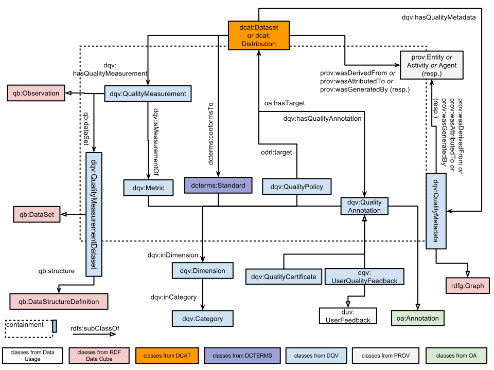

This document provides a framework in which the quality of a dataset can be described, whether by the dataset publisher or by a broader community of users. It does not provide a formal, complete definition of quality, rather, it sets out a consistent means by which information can be provided such that a potential user of a dataset can make his/her own judgment about its fitness for purpose.
Status of This Document
This section describes the status of this document at the time of its publication. Other documents may supersede this document. A list of current W3C publications and the latest revision of this technical report can be found in the W3C technical reports index at https://www.w3.org/TR/.
This document presents the most mature version of the Data Quality Vocabulary that could be produced in the lifespan of the Data on the Web Best Practices Working Group. At time of publication, its main components have remained stable for several months, even after receiving feedback and suggestions from the community. We expect however that further clarifications and extensions of this model may be carried out by future working groups, considering requirements from specific domains or applications.
Publication as a Working Group Note does not imply endorsement by the W3C Membership. This is a draft document and may be updated, replaced or obsoleted by other documents at any time. It is inappropriate to cite this document as other than work in progress.
This vocabulary does not seek to determine what "quality" means. We believe that quality lies in the eye of the beholder; that there is no objective, ideal definition of it. Some datasets will be judged as low-quality resources by some data consumers, while they will perfectly fit others' needs. In accordance, we attach a lot of importance to allowing many actors to assess the quality of datasets and publish their annotations, certificates, opinions about a dataset. A dataset's publisher should seek to publish metadata that helps data consumers determine whether they can use the dataset to their benefit. However, publishers should not be the only ones to have a say on the quality of data published in an open environment like the Web. Certification agencies, data aggregators, data consumers can make relevant quality assessments, too.
We want to stimulate this by making it easier to publish, exchange and consume quality metadata, for every step of a dataset's lifecycle. This is why next to rather expected constructs like quality measurements, the Data Quality Vocabulary puts an emphasis on feedback, annotation, policies and certificates.
DQV draws inspiration from and is aligned with existing work on representing data quality, notably the daQ ontology for representing information (especially metrics) on the quality of linked open datasets [DaQ]. daQ is itself anchored in the RDF Data Cube framework for publishing statistical data [
Vocab-Data-Cube]. Note that DQV elements can be applied not only to express metadata on the quality of datasets; they can also be used to express statements about the quality of that metadata itself. This is especially true when it comes to representing the provenance of that metadata or its conformance with respect to established metadata standards.
A list of DQV-related implementations including references to vocabulary extending DQV, tools serializing quality results in DQV, portals exposing data quality in DQV, and papers citing the DQV, is maintained at the DQV Implementation wiki page. Please feel free to contact the editors if you have any implementation to report.
2. Namespaces
The namespace for DQV is http://www.w3.org/ns/dqv#. DQV, however, seeks to re-use elements from other vocabularies, notably DCAT, following the
best
practices for data vocabularies identified by the Data on the Web Best Practices Working Group.
The table below indicates the full list of namespaces and prefixes used in this document.
Prefix
Namespace
daq
http://purl.org/eis/vocab/daq#
dcat
http://www.w3.org/ns/dcat#
dcterms
http://purl.org/dc/terms/
dqv
http://www.w3.org/ns/dqv#
duv
http://www.w3.org/ns/duv#
oa
http://www.w3.org/ns/oa#
prov
http://www.w3.org/ns/prov#
sdmx-attribute
http://purl.org/linked-data/sdmx/2009/attribute#
skos
http://www.w3.org/2004/02/skos/core#
3. Vocabulary Overview
The following vocabulary is based on DCAT [vocab-dcat] that it extends with a number of additional properties and classes suitable for expressing the quality of a dataset.
The quality of a given dataset or distribution is assessed via a number of observed properties. For instance, one may consider a dataset to be of high quality because it conforms to a specific standard while for other use-cases the quality of the data will depend on its level of interlinking with other datasets. To express these properties an instance of a dcat:Dataset or dcat:Distribution can be related to five different types of quality information represented by the following classes:
dqv:QualityAnnotation represents feedback and quality certificates given about the dataset or its distribution.
dcterms:Standard represents a standard the dataset or its distribution conforms to.
dqv:QualityPolicy represents a policy or agreement that is chiefly governed by data quality concerns.
dqv:QualityMeasurement represents a metric value providing quantitative or qualitative information about the dataset or distribution.
prov:Entity represents an entity involved in the provenance of the dataset or distribution.
DQV defines quality measures as specific instances of Quality Measurements, adapting the daQ quality framework [DaQ], [DaQ-RDFCUBE]. It relies on quality dimensions and quality metrics.
A Quality Dimension (dqv:Dimension) is a quality-related characteristic of a dataset relevant to the consumer (e.g., the availability of a dataset).
A Quality Metric (dqv:Metric) gives a procedure for measuring a data quality dimension, which is abstract, by observing a concrete quality indicator. There are usually multiple metrics per dimension; e.g., availability can be indicated by the accessibility of a SPARQL endpoint, or that of an RDF dump. The value of a metric can be numeric (e.g., for the metric “human-readable labeling of classes, properties and entities”, the percentage of entities having an rdfs:label or rdfs:comment) or boolean (e.g., whether or not a SPARQL endpoint is accessible).
Besides quality measurements, DQV considers certificates, standards, and quality policies, which can also be organized according to dimensions. Quality metadata containers (dqv:QualityMetadata) can group together different quality statements, so that their provenance can be tracked jointly.

Fig. 1Data model showing the main relevant classes
and their relations.
N.B.: "containment" refers to the inclusion of quality statements into "containers", which may or may not be treated as (RDF) graphs (see later example and the usage note for the class dqv:QualityMetadata).
Quality information can be derived from other quality information. For example, a quality annotation can be derived from a standard or a quality measurement. Quality measurements can be derived from other measurements. Metrics can be derived from other metrics. A standard can be built on another standard or a (set of) metrics. DQV models such derivations through the property prov:wasDerivedFrom as illustrated in the diagram below.
Fig. 2Using the property prov:wasDerivedFrom to interrelate quality metrics and other quality statements.
Some properties from third-party vocabularies like Dublin Core [Dublin-Core], RDF Data Cube [Vocab-Data-Cube] and Web Annotation [WebAnnotation] are included here in order to make the document more self-contained and better readable. The definitions of these properties are copied from their original specifications and the way these properties should be used in the context of Data Quality Vocabulary is explained in the DQV usage notes.
Indicates the dataset to which a quality measurement (which is an RDF Data Cube observation) belongs. This is not the dataset whose quality is being measured, which is indicated by dqv:computedOn.
Refers to the resource (e.g., a dataset, a linkset, a graph, a set of triples) on which the quality measurement is performed. In the DQV context, this property is generally expected to be used in statements in which objects are instances of dcat:Dataset or dcat:Distribution.
Represents criteria relevant for assessing quality. Each quality dimension must have one or more metric to measure it. A dimension is linked with a category using the dqv:inCategory property.
Categories are meant to systematically organize dimensions. The Data Quality Vocabulary defines no specific cardinality constraints for dqv:inCategory, since distinct quality frameworks might have different perspectives over a dimension. A dimension may therefore be associated to more than one category. However, those who define new quality metrics should try to avoid this as much as possible and assign only one category to the dimensions they define.
Dimension and category are abstract entities. We represent instances dqv:Dimension and dqv:Category as instances of skos:Concept, which we think enable similar features as these for dimensions and categories in daQ. Our representation choice differs significantly for metrics, however. daQ uses RDFS/OWL classes and subclasses so as to represent constraints on measurements (e.g., on the type of values). RDFS/OWL does not allow one to fully capture all constraints. Additionally, other languages are being defined to represent constraints in more appropriate ways. We think it is therefore not appropriate now to recommend to treat specific metrics as subclasses of dqv:Metric, and we refer implementers to future progress on SHACL and related technology. See Appendix "Defining and using parameters for metrics" for further discussion.
In DQV, each dataset of quality measurements is an RDF Cube DataSet. This property can be used to indicate the RDF Data structure definition a dataset of quality measurements is expected to comply with.
This property is used to attach an instance of dqv:QualityPolicy to a dataset, a linkset, a graph, a set of triples, etc. In the DQV context, this property is generally expected to be used in statements in which objects are instances of dcat:Dataset or dcat:Distribution.
Represents quality annotations, including ratings, quality certificates or feedback that can be associated to datasets or distributions. Quality annotations must have one oa:motivatedBy statement with an instance of oa:Motivation (and skos:Concept) that reflects a quality assessment purpose. We define this instance as dqv:qualityAssessment.
This property is used in DQV to connect an instance of dqv:QualityAnnotation or its subclasses (dqv:QualityCertificate and dqv:UserQualityFeedback) to the resource the annotation is about. Any kind of resource (e.g., a dataset, a linkset, a graph, a set of triples) could be a target. However, in the DQV context, this property is generally expected to be used in statements in which objects are instances of dcat:Dataset or dcat:Distribution.
The Web Annotation Vocabulary [WebAnnotation] is intended as a W3C Recommendation, but it is still under development at the time of publishing this Note. We have made our best to consider the latest version available, but changes might take place until it becomes a formal Recommendation. For example, new kinds of annotation body might be included and supersede the types we have considered in DQV. For this reason, we invite readers to check examples in this Note with the latest version of the Web Annotation Vocabulary.
An annotation that associates a resource (especially, a dataset or a distribution) to another resource (for example, a document) that certifies the resource's quality according to a set of quality assessment rules.
Future DQV versions may opt for renaming this class. The current name is a little misleading, as it hints that instances of this class are quality certificates rather than annotations pointing to quality certificates. Feedback is welcome!
Represents feedback that users have on the quality of datasets or distributions. Besides dqv:qualityAssessment, which is the motivation required by all quality annotations, one of the predefined instances of oa:Motivation should be indicated as motivation to distinguish among the different kinds of feedback, e.g., classifications, questions.
QualityMetadata containers do not necessary include all types of quality statements DQV can support. Implementers decide the granularity of containment. In the current version of DQV, we also leave open the choice of the containment "technique". Implementers can use (RDF) graph containment. They may also use an appropriate property of their choice — for example (a subproperty of) dcterms:hasPart — to link instances of dqv:QualityMetadata with instances of other DQV classes.
Generation is the completion of production of a new entity by an activity. This entity did not exist before generation and becomes available for usage after this generation.
Dimensions are meant to systematically organize metrics, quality certificates and quality annotations. The Data Quality Vocabulary defines no specific cardinality constraints for dqv:inDimension, since distinct quality frameworks might have different perspectives over a metric. A metric may therefore be associated to more than one dimension. However, those who define new quality metrics should try to avoid this as much as possible and assign only one dimension to the metrics they define. More than one dimension can be indicated for each quality annotation or certificate.
Refers to the performed quality measurements. Quality measurements can be performed to any kind of resource (e.g., a dataset, a linkset, a graph, a set of triples). However, in the DQV context, this property is generally expected to be used in statements in which subjects are instances of dcat:Dataset or dcat:Distribution.
Refers to a grouping of quality information such as certificates, policies, measurements and annotations as a named graph. Quality information represented in such a grouping can pertain to any kind of resource (e.g., a dataset, a linkset, a graph, a set of triples). However, in the DQV context, this property is generally expected to be used in statements in which subjects are instances of dcat:Dataset or dcat:Distribution.
Refers to a quality annotation. Quality annotation can be applied to any kind of resource, e.g., a dataset, a linkset, a graph, a set of triples. However, in the DQV context, this property is generally expected to be used in statements in which subjects are instances of dcat:Dataset or dcat:Distribution.
A derivation is a transformation of an entity into another, an update of an entity resulting in a new one, or the construction of a new entity based on a pre-existing entity.
prov:wasDerivedFrom expresses a quite abstract relation of derivation. More specialized relations of derivation can be defined as subproperties of prov:wasDerivedFrom, whenever this is required by applications.
Whenever DQV implementers need to extend the motivations for quality annotations, they should follow the instructions provided by the Web Annotation Data Model, and the concepts in the extension should be defined as specializations of dqv:qualityAssessment.
Precision is a quality dimension, which refers to the recorded level of details. It represents the exactness of a measurement or description. It is equivalent the notion of Precision from ISO 25012.
5. Note on documenting resources expressed with DQV
The above section presents the most important classes and properties that DQV uses to represent quality-related metadata. I.e., these are the elements needed to express the machine-readable information that DQV-aware data consumers can exploit for their processes. However, in many cases extra human-readable information is also needed, e.g., to provide (multilingual) definitions and labels or just more context for the quality measurements, metrics, etc. that are expressed with the core DQV classes.
:currentnessMeasurement a dqv:QualityMeasurement ;
dqv:value "false"^^xsd:boolean
dcterms:description “The triples in the dataset are outdated” .
6. Example Usage
This section shows some examples to illustrate the application of the Dataset Quality Vocabulary.
NB: in the remainder of this section, the prefix ":"
refers to http://example.org/
6.1 Express a quality assessment with quality metrics
Let us consider a dataset
:myDataset , and its distribution
:myDatasetDistribution ,
:myDataset
a dcat:Dataset ;
dcterms:title "My dataset" ;
dcat:distribution :myDatasetDistribution
.
:myDatasetDistribution
a dcat:Distribution ;
dcat:downloadURL <http://www.example.org/files/mydataset.csv> ;
dcterms:title "CSV distribution of dataset" ;
dcat:mediaType "text/csv" ;
dcat:byteSize "87120"^^xsd:decimal
.
An automated quality checker has provided a quality assessment with two (CSV) quality measurements for
:myDatasetDistribution .
:myDatasetDistribution
dqv:hasQualityMeasurement :measurement1, :measurement2
.
:measurement1
a dqv:QualityMeasurement ;
dqv:computedOn :myDatasetDistribution ;
dqv:isMeasurementOf :downloadURLAvailabilityMetric ;
dqv:value "true"^^xsd:boolean
.
:measurement2
a dqv:QualityMeasurement ;
dqv:computedOn :myDatasetDistribution ;
dqv:isMeasurementOf :csvCompletenessMetric ;
dqv:value "0.5"^^xsd:double
.
#definition of dimensions and metrics
:availability
a dqv:Dimension ;
skos:prefLabel "Availability"@en ;
skos:definition "Availability of a dataset is the extent to which data (or some
portion of it) is present, obtainable and ready for use."@en ;
dqv:inCategory :accessibility
.
:completeness
a dqv:Dimension ;
skos:prefLabel "Completeness"@en ;
skos:definition "Completeness refers to the degree to which all required information
is present in a particular dataset."@en ;
dqv:inCategory :intrinsicDimensions
.
:downloadURLAvailabilityMetric
a dqv:Metric ;
skos:definition "It checks if dcat:downloadURL is available and if its value is
dereferenceable."@en ;
dqv:expectedDataType xsd:boolean ;
dqv:inDimension :availability
.
:csvCompletenessMetric
a dqv:Metric ;
skos:definition "Ratio between the number of objects represented in the csv and the
number of objects expected to be represented according to the declared dataset
scope."@en ;
dqv:expectedDataType xsd:double ;
dqv:inDimension :completeness
.
Categories and dimensions might be more extensively defined, see in the section 'Dimensions and metrics hints' for further examples. Any quality framework is free to define its own dimensions and categories.
6.2 Document the provenance of the quality metadata
The results of metrics obtained in the previous assessment are stored in the
:myQualityMetadata graph.
# :myQualityMatadata is a graph
:myQualityMetadata {
:myDatasetDistribution
dqv:hasQualityMeasurement :measurement1, :measurement2
.
# The graph contains the rest of the statements presented in the previous example.
}
# :myQualityMetadata has been created by :myQualityChecker and it is the result of the
# :myQualityChecking activity
:myQualityMetadata
a dqv:QualityMetadata ;
prov:wasAttributedTo :myQualityChecker ;
prov:generatedAtTime "2015-05-27T02:52:02Z"^^xsd:dateTime ;
prov:wasGeneratedBy :myQualityChecking .
# :myQualityChecker is a service computing some quality metrics
:myQualityChecker
a prov:SoftwareAgent ;
rdfs:label "A quality assessment service"^^xsd:string .
# Further details about quality service/software can be provided, for example,
# deploying vocabularies such as Dataset Usage Vocabulary (DUV), Dublin Core or ADMS.SW
# :myQualityChecking is the activity that has generated :myQualityMetadata from
# :myDatasetDistribution
:myQualityChecking
a prov:Activity;
rdfs:label "The checking of myDatasetDistribution's quality"^^xsd:string;
prov:wasAssociatedWith :myQualityChecker;
prov:used :myDatasetDistribution;
prov:generated :myQualityMetadata;
prov:endedAtTime "2015-05-27T02:52:02Z"^^xsd:dateTime;
prov:startedAtTime "2015-05-27T00:52:02Z"^^xsd:dateTime
.
6.3 Document the provenance of single quality measurements
The group has discussed provenance at different levels of granularity (dqv:QualityMeasurement and dqv:QualityMetadata). In the previous example we have shown how to track provenance at the level of quality metadata as a whole. In the following, we provide an example of provenance for a single quality measurement, :myMeasurement.
:myDatasetDistribution
dqv:hasQualityMeasurement :myMeasurement .
# :myMeasurement has been created by :myQualityChecker and it is the result of the
# :myQualityChecking activity
:myMeasurement
a dqv:QualityMeasurement ;
dqv:computedOn :myDatasetDistribution ;
dqv:isMeasurementOf :downloadURLAvailabilityMetric ;
dqv:value "true"^^xsd:boolean ;
prov:wasAttributedTo :myQualityChecker ;
prov:generatedAtTime "2015-05-27T02:52:02Z"^^xsd:dateTime ;
prov:wasGeneratedBy :myQualityChecking
.
:downloadURLAvailabilityMetric
a dqv:Metric ;
skos:definition "Checks if dcat:downloadURL is available and if its value is
dereferenceable."@en ;
dqv:expectedDataType xsd:boolean ;
dqv:inDimension :availability .
# :myQualityChecker is a service computing some quality metrics
:myQualityChecker
a prov:SoftwareAgent ;
rdfs:label "A quality assessment service"^^xsd:string .
# Further details about quality service/software can be provided, for example,
# deploying vocabularies such as Dataset Usage Vocabulary (DUV), Dublin Core or ADMS.SW
# :myQualityChecking is the activity that has generated :myMeasurement from :myDatasetDistribution
:myQualityChecking
a prov:Activity;
rdfs:label "The checking of myDatasetDistribution's quality"^^xsd:string;
prov:wasAssociatedWith :myQualityChecker;
prov:used :myDatasetDistribution;
prov:generated :myMeasurement;
prov:endedAtTime "2015-05-27T02:52:02Z"^^xsd:dateTime;
prov:startedAtTime "2015-05-27T00:52:02Z"^^xsd:dateTime .
6.4 Document the provenance of a dataset
Statements similar to the ones applied to the resource
:myQualityMetadata above can be applied to the resource
:myDataset to indicate the provenance of the dataset. I.e., a dataset can be generated by a specific software agent, be generated at a certain time, etc. The HCLS
Community Profile for describing datasets provides further examples.
6.5 Express that a dataset received an ODI certificate
Let us express that an ODI certificate for the "City of Raleigh Open Government Data" dataset is available at the URL <https://certificates.theodi.org/en/datasets/393/certificate>.
<https://certificates.theodi.org/en/datasets/393> a dcat:Dataset ;
dqv:hasQualityAnnotation :myDatasetQA .
:myDatasetQA
a dqv:QualityCertificate ;
oa:hasTarget <https://certificates.theodi.org/en/datasets/393> ;
oa:hasBody <https://certificates.theodi.org/en/datasets/393/certificate> ;
oa:motivatedBy dqv:qualityAssessment
.
6.6 Express a question about dataset quality
Let us ask a question about the completeness of the "City of Raleigh Open Government Data" dataset.
<https://certificates.theodi.org/en/datasets/393> a dcat:Dataset ;
dqv:hasQualityAnnotation :questionQA .
:questionQA
a dqv:UserQualityFeedback ;
oa:hasTarget <https://certificates.theodi.org/en/datasets/393> ;
oa:hasBody :textBody ;
oa:motivatedBy dqv:qualityAssessment, oa:questioning ;
dqv:inDimension :completeness
.
:textBody a oa:TextualBody ;
rdf:value "Could you please provide information about the completeness of your
dataset?" ;
dc:language "en" ;
dc:format "text/plain"
.
6.7 Express that a dataset fits in a quality classification
Let us express that the "City of Raleigh Open Government Data" dataset is classified as a four stars dataset against the 5 Stars Linked Open Data rating system.
<https://certificates.theodi.org/en/datasets/393> a dcat:Dataset ;
dqv:hasQualityAnnotation :classificationQA .
:classificationQA
a dqv:UserQualityFeedback ;
oa:hasTarget <https://certificates.theodi.org/en/datasets/393> ;
oa:hasBody :four_stars ;
oa:motivatedBy dqv:qualityAssessment, oa:classifying ;
dqv:inDimension :availability .
:four_stars
a skos:Concept;
skos:inScheme :OpenData5Star ;
skos:prefLabel "Four stars"@en ;
skos:definition "Dataset available on the Web with structured machine-readable non
proprietary format. It uses URIs to denote things."@en .
6.8 Express derivation between quality metrics, measurements and annotations
DQV models derivation with the property prov:wasDerivedFrom. For example, the accessibility of the dataset :myDataset can be derived from the accessibility of its distributions :myCSVDatasetDistribution and :mySPARQLDatasetDistribution.
:myDataset
a dcat:Dataset ;
dcterms:title "My dataset" ;
dcat:distribution :myCSVDatasetDistribution, :mySPARQLDatasetDistribution
.
:myCSVDatasetDistribution
a dcat:Distribution ;
dcat:downloadURL <http://www.example.org/files/mydataset.csv> ;
dcterms:title "CSV distribution of dataset" ;
dcat:mediaType "text/csv" ;
dcat:byteSize "87120"^^xsd:decimal
.
:mySPARQLDatasetDistribution
a dcat:Distribution ;
dcat:accessURL <http://www.example.org/sparql>
dcterms:title "SPARQL access to the dataset" ;
dcat:mediaType "application/sparql-results+json"
.
# definition of dimensions and metrics
:availability
a dqv:Dimension ;
skos:prefLabel "Availability"@en ;
skos:definition "Availability of a dataset is the extent to which data (or some
portion of it) is present, obtainable and ready for use."@en ;
dqv:inCategory :accessibility
.
:downloadURLAvailabilityMetric
a dqv:Metric ;
skos:definition "Checks if dcat:downloadURL is available and if its value
is dereferenceable."@en ;
dqv:expectedDataType xsd:boolean ;
dqv:inDimension :availability
.
:SPARQLAvailabilityMetric
a dqv:Metric ;
skos:definition "Checks if an URL specified in dcat:accessURL is available
and if at that URL a SPARQL endpoint is active."@en ;
dqv:expectedDataType xsd:boolean ;
dqv:inDimension :availability
.
:datasetAvailabilityMetric
a dqv:Metric ;
prov:wasDerivedFrom :downloadURLAvailabilityMetric, :SPARQLAvailabilityMetric;
skos:definition "Checks the availabitity of the specified distributions."@en ;
dqv:expectedDataType xsd:boolean ;
dqv:inDimension :availability
.
Depending on the specific application context, the expression of this derivation can be kept at level of the quality measurements. In the following, the measurement :measurement3 of :myDataset's availability is derived from :measurement1 and :measurement2.
The classification of :myDataset as :three_stars can be derived from the result of a quality measurement :measurement2
:myDataset
dqv:hasQualityAnnotation :myDatasetClassification .
:myDatasetClassification
a dqv:UserQualityFeedback ;
prov:wasDerivedFrom :measurement2 ;
oa:hasTarget :myDataset ;
oa:hasBody :three_stars ;
oa:motivatedBy dqv:qualityAssessment, oa:classifying ;
dqv:inDimension :availability
.
:three_stars
a skos:Concept;
skos:inScheme :OpenData5Star ;
skos:prefLabel "three stars"@en ;
skos:definition "Dataset available on the Web with structured machine-readable
non proprietary format."@en
.
6.9 Express quality of SKOS concept schemes
Let’s consider
:myControlledVocabulary, a controlled vocabulary made available on the Web using the SKOS [
SKOS-reference] and DCAT [vocab-dcat].
:myControlledVocabulary
a dcat:Dataset ;
dcterms:title "My controlled vocabulary"
.
:myControlledVocabularyDistribution
a dcat:Distribution ;
dcat:downloadURL <http://www.example.org/files/myControlledVocabulary.ttl> ;
dcterms:title "SKOS/RDF distribution of my controlled vocabulary" ;
dcat:mediaType "text/turtle" ;
dcat:byteSize "190120"^^xsd:decimal
.
qSKOS is an open source tool, which detects quality issues affecting SKOS vocabularies [qSKOS]. It considers 26 quality issues including, for example, “Incomplete Language Coverage” and “Label Conflicts” which are grouped in the category “Labeling and Documentation issues”. Quality issues addressed by qSKOS can be considered as DQV quality dimensions, whilst the number of concepts in which a quality issue occurs can be the metric deployed for each quality dimension.
# definition of instances for some of the metrics, dimensions and categories deployed
# in qSKOS.
:numOfConceptsWithLabelConflicts
a dqv:Metric;
skos:prefLabel "Conflicting concepts"@en ;
skos:definition "Number of concepts having conflicting labels"@en ;
dqv:expectedDataType xsd:interger ;
dqv:inDimension :LabelConflicts
.
:numOfConceptsWithIncompleteLanguageCoverage
a dqv:Metric;
skos:prefLabel "Language incomplete concepts"@en ;
skos:definition "Number of concepts having an incomplete language coverage"@en ;
dqv:expectedDataType xsd:interger ;
dqv:inDimension :incompleteLanguageCoverage .
:LabelConflicts
a dqv:Dimension;
skos:prefLabel "Label Conflicts"@en ;
skos:definition "Dimension corresponding to the label conflicts quality issue"@en ;
dqv:inCategory :labelingDocumentationIssues .
:incompleteLanguageCoverage
a dqv:Dimension;
skos:prefLabel "Incomplete Language Coverage"@en ;
skos:definition "Dimension corresponding to the incomplete language coverage
issue"@en ;
dqv:inCategory :labelingDocumentationIssues .
:labelingDocumentationIssues
a dqv:Category ;
skos:prefLabel "Labeling and Documentation Issues"@en ;
skos:definition "Category grouping labeling and documentation issues"@en
.
DQV represents the qSKOS quality assessment on
:myControlledVocabulary for the dimensions “Incomplete Language Coverage” and “Label Conflicts”.
(VoID) linksets are collections of (RDF) links between two datasets: the linkset's subject and the linkset's object, containing respectively the subjects and objects of all link statements. Linksets are as important as datasets when it comes to the joint exploitation of datasets served independently in Linked Data. The representation of quality for a linkset is another example of how DQV can be exploited.
Let’s define three DCAT datasets, including one VoID linkset, which connects a subject dataset to an object dataset named respectively by void:subjectsTarget and by void:objectsTarget:
:myDataset1
a dcat:Dataset ;
dcterms:title "My dataset 1"
.
:myDataset2
a dcat:Dataset ;
dcterms:title "My dataset 2"
.
:myLinkset
a dcat:Dataset, void:Linkset ;
dcterms:title "A Linkset from My dataset 1 to My dataset 2";
void:linkPredicate skos:exactMatch ;
void:subjectsTarget :myDataset1 ;
void:objectsTarget :myDataset2
.
We can represent information about the quality of :myLinkset using the “Multilingual importing” quality metric [MultilingualImporting]. This metric applies to linksets between datasets that include SKOS concepts [SKOS-reference]. It considers the concepts that have been matched and quantifies the information gain the links provide if one adds the preferred labels or the alternative labels of the concepts from the object dataset to the descriptions of the concepts from the subject dataset. Let us first define the proper metric, dimension and category.
# Definition of instances for Metric, Dimension and Category.
:importingForPropertyPercentage
a dqv:Metric ;
skos:definition "Ratio between novel preferred or alternative labels
gained from the object dataset via skos:exactMatch links and the preferred or
alternative labels that are in the subject and object datasets."@en
dqv:expectedDataType xsd:double ;
dqv:inDimension :completeness .
:completenessGain
a dqv:Dimension ;
skos:prefLabel "Completeness Gain"@en ;
skos:definition "Degree to which a linkset
contribute to add relevant information to a particular dataset."@en ;
dqv:inCategory :complementationGain
.
:complementationGain
a dqv:Category ;
skos:definition "Category that groups dimensions measuring the data quality gain
obtained by exploiting linksets."@en
.
The quality assessment of the "label importing" depends on two extra parameters: :onProperty and :onLanguage, which are respectively, the SKOS property and the language tag considered for measuring the completeness gains. We add the following statements to represent these parameters (note that type qb:DimensionProperty and the range definitions are firstly needed for compatibility with RDF Data Cube).
:onLanguage
a qb:DimensionProperty, owl:DataProperty ;
rdfs:comment "Language on which label importing is assessed."@en ;
rdfs:domain dqv:QualityMeasurement;
rdfs:label "Label import assessment language"@en ;
rdfs:range xsd:string
.
:onProperty
a qb:DimensionProperty, rdf:Property ;
rdfs:comment "Property on which label importing is assessed."@en ;
rdfs:domain dqv:QualityMeasurement ;
rdfs:label "Label import assessment property"@en ;
rdfs:range rdf:Property
.
Let us add actual quality assessments for alternative and preferred labels in Italian and English:
## for Italian alternative labels
:measurement_exactMatchAltLabelIt
a dqv:QualityMeasurement;
dqv:computedOn :myLinkset ;
dqv:value "1.0"^^xsd:double ;
dcterms:date "2016-01-10"^^xsd:date ;
dqv:isMeasurementOf :importingForPropertyPercentage ;
:onLanguage "it" ;
:onProperty skos:altLabel .
## for English alternative labels
:measurement_exactMatchAltLabelEn
a dqv:QualityMeasurement;
dqv:computedOn :myLinkset ;
dqv:value "0.1"^^xsd:double ;
dcterms:date "2016-01-10"^^xsd:date;
dqv:isMeasurementOf :importingForPropertyPercentage ;
:onLanguage "en" ;
:onProperty skos:altLabel .
## for Italian preferred labels
:measurement_exactMatchPrefLabelIt
a dqv:QualityMeasurement;
dqv:computedOn :myLinkset ;
dqv:value "0.5"^^xsd:double ;
dcterms:date "2016-01-10"^^xsd:date ;
dqv:isMeasurementOf :importingForPropertyPercentage ;
:onLanguage "it" ;
:onProperty skos:prefLabel .
## for English preferred labels
:measurement_exactMatchPrefLabelEn
a dqv:QualityMeasurement;
dqv:computedOn :myLinkset ;
dqv:value "1"^^xsd:double ;
dcterms:date "2016-01-10"^^xsd:date ;
dqv:isMeasurementOf :importingForPropertyPercentage ;
:onLanguage "en" ;
:onProperty skos:prefLabel .
6.11 Express the conformance of a dataset's metadata with a standard
It is often desirable to indicate that metadata about datasets in a catalogue are compliant with a metadata standard, or an application profile of an existing metadata standard. A typical example is the GeoDCAT Application Profile [GeoDCAT-AP], an extension of the DCAT vocabulary [vocab-dcat] to represent metadata for geospatial data portals. GeoDCAT-AP allows one to express that a dataset's metadata conforms to an existing standard, following the recommendations of ISO 19115, ISO 19157 and the EU INSPIRE directive. DCAT partly supports the expression of such metadata conformance statements. The following example illustrates how a (DCAT)
catalog record can be said to be conformant with the GeoDCAT-AP standard itself.
:myDataset a dcat:Dataset .
:myDatasetRecord a dcat:CatalogRecord ;
foaf:primaryTopic :myDataset ;
dcterms:conformsTo :geoDCAT-AP .
:geoDCAT-AP a dcterms:Standard;
dcterms:title "GeoDCAT Application Profile. Version 1.0" ;
dcterms:comment "GeoDCAT-AP is developed in the context of the Interoperability
Solutions for European Public Administrations (ISA) Programme"@en;
dcterms:issued "2015-12-23"^^xsd:date ;
foaf:page
<https://joinup.ec.europa.eu/asset/dcat_application_profile/asset_release/geodcat-ap-v10>
.
Note that this example does not include the metadata about the dataset :myDataset itself. We assume this is present in an RDF data source accessible via the URI
:myDatasetRecord. We also assume that
:geoDCAT-AP is a reference URI that denotes the GeoDCAT-AP standard, which can be re-used across many catalog record descriptions, not just a locally introduced URI.
Note
Finer-grained representation of conformance statements can be found in the literature, and applications with more complex requirements may implement them, including for example the requirement of representing 'non-conformance' tested by specific procedures. The GeoDCAT Application Profile, for example, suggests a "provisional mapping" for extended profiles, which re-uses the PROV data model for provenance (see Annex II.14 at [GeoDCAT-AP]). Such patterns come however at the cost of having to publish and exchange representations that are much more elaborate. They will also have to be aligned with the result of another ongoing efforts on data validation and the reporting thereof, as currently discussed around SHACL, for example. We have thus decided to postpone addressing these requirements for now.
6.12 Express the conformance of a dataset with a quality policy
DQV introduces the class dqv:QualityPolicy to express that a Dataset or Distribution follows a policy or agreement that is chiefly defined by data quality concerns. DQV does not provide a complete framework for expressing policies. The class dqv:QualityPolicy is rather meant as an anchor point, through which DQV implementers can relate properties and classes of policy-dedicated vocabularies, such as ODRL [ODRL], to the core elements that define quality of datasets and distributions.
The example below specifies that a data provider grants the permission to access a dataset and commits to serve the data with a certain quality, more concretely, 99% availability of a SPARQL endpoint (distribution) associated with the dataset. This is expressed in ODRL as an offer with a duty on the service provider that states a constraint defined using a DQV metric (:sparqlEndpointUptime), for which measurements have to be greater than a certain percentage (99). The odrl:assigner is the issuer of the policy statement; it is also the assignee of the duty to deliver the distribution as the policy requires it. There is no explicitly mentioned recipient for the policy itself, since this examples is about a generic data access scenario. Note that instances of dqv:QualityPolicy could be instances of the class odrl:Agreement, in which case an odrl:assignee is likely to appear for the policy.
:serviceProvider a odrl:Party .
:myDataset a dcat:Dataset ;
dcat:distribution :myDatasetSparqlDistribution ;
:myDatasetSparqlDistribution a dcat:Distribution .
:policy1 a odrl:Offer, dqv:QualityPolicy ;
odrl:permission [
a odrl:Permission ;
odrl:target :myDataset ;
odrl:action odrl:read ;
odrl:assigner :serviceProvider;
odrl:duty [
a odrl:Duty;
odrl:assignee :serviceProvider;
odrl:target :myDatasetSparqlDistribution ;
odrl:constraint [
a odrl:Constraint ;
prov:wasDerivedFrom :sparqlEndpointUptime;
odrl:percentage "99"^^xsd:double ;
odrl:operator odrl:gteq
]
]
]
.
Note
The expression of constraints in ODRL seems quite unfit with expressing general constraints on values in RDF graphs, as we would require here. However, ODRL can be easily extended, and is schedule to undergo refinement in the context of the W3C Permissions & Obligations
Expression Working Group. In the future implementers should investigate whether a general constraint expression language like the coming SHACL [SHACL] provides a more appropriate mechanism to be used on top of ODRL permissions and duties.
6.13 Express dataset precision and accuracy
The need for documenting data precision (also sometimes referred to as "resolution") is a common requirement, in particular, when dealing with spatial data. The following example shows how DQV can meet this requirement.
:myDataset a dcat:Dataset ;
dqv:hasQualityMeasurement :myDatasetPrecision, :myDatasetAccuracy .
:myDatasetPrecision a dqv:QualityMeasurement ;
dqv:isMeasurementOf :spatialResolutionAsDistance ;
dqv:value "1000"^^xsd:decimal ;
sdmx-attribute:unitMeasure <http://www.wurvoc.org/vocabularies/om-1.8/metre>
.
:spatialResolutionAsDistance a dqv:Metric;
skos:definition "Spatial resolution of a dataset expressed as distance"@en ;
dqv:expectedDataType xsd:decimal ;
dqv:inDimension dqv:precision
.
Precision can be alternatively expressed without unit of measure specifying spatial resolution by means of an "equivalent scale" with a fraction (e.g., 1:1,000, 1:1,000,000)
:myDataset a dcat:Dataset;
dqv:hasQualityMeasurement :myDatasetPrecisionES .
:myDatasetPrecisionES a dqv:QualityMeasurement ;
dqv:isMeasurementOf :spatialResolutionAsEquivalentScale ;
dqv:value "0.000001"^^xsd:decimal
.
:spatialResolutionAsEquivalentScale a dqv:Metric;
skos:definition "Spatial resolution of a dataset expressed as equivalent scale,
by using a representative fraction (e.g., 1:1,000, 1:1,000,000)."@en ;
dqv:expectedDataType xsd:decimal ;
dqv:inDimension dqv:precision
.
or specifying the angular distance.
:myDataset a dcat:Dataset;
dqv:hasQualityMeasurement :myDatasetPrecisionAS .
:myDatasetPrecisionAS a dqv:QualityMeasurement ;
dqv:isMeasurementOf :spatialResolutionAsAngularDistance ;
dqv:value "3.5"^^xsd:decimal ;
sdmx-attribute:unitMeasure <http://www.wurvoc.org/vocabularies/om-1.8/degree> .
:spatialResolutionAsAngularDistance a dqv:Metric;
skos:definition "Spatial resolution of a dataset expressed as angular distance"@en ;
dqv:expectedDataType xsd:decimal ;
dqv:inDimension dqv:precision
.
Note that the precision (or resolution) of a dataset is not equivalent to its accuracy. High precision values are not necessarily accurate. High precision values can even be pointless, as when one asserts that Magna Carta was signed at 1215-06-15T00:00:00. Accuracy is nonetheless an important dimension of data quality. Data accuracy metrics and measurements can be represented with DQV, as in the following example:
:myDatasetAccuracy a dqv:QualityMeasurement ;
dqv:isMeasurementOf :spatialAccuracy ;
dqv:value "98.2"^^xsd:decimal
sdmx-attribute:unitMeasure <http://www.wurvoc.org/vocabularies/om-1.8/Percentage>
.
:spatialAccuracy a dqv:Metric;
skos:definition "Percentage of spatial elements that are found accurate
according to methodology XYZ"@en ;
dqv:expectedDataType xsd:decimal ;
dqv:inDimension ldqd:semanticAccuracy
.
7. Dimensions and metrics hints
This section gathers relevant quality dimensions and ideas for corresponding metrics, which might be eventually represented as instances of dqv:Category, dqv:Dimension and dqv:Metric. The goal of the Data Quality Vocabulary is not to define a normative list of dimensions and metrics. There are already several reference classifications available, which are the result of a lot of community work. Unifying them here seems both hard and not desirable, as fundamental approaches to quality vary between domains or even applications. This section provides instead a set of examples, starting from use cases included in the Use
Cases & Requirements document. In particular, we offer the quality dimension proposed in ISO 25012 [
ISOIEC25012] and Zaveri et al. [ZaveriEtAl] as two starting points. Ultimately, implementers will need to choose themselves the approach that fits best their needs. They can extend on these starting points, creating their own refinements of categories and dimensions, and of course their own metrics. They can mix existing approaches — we show that the proposals from ISO and Zaveri et al. are not completely disjoint. Implementers can also adopt completely different classifications, if existing ones do not fit their specific application scenarios. They should however be aware that relying on existing classifications and metrics increases interoperability, i.e., the chance that human and machine agents can properly understand and exploit their quality assessments.
7.1 Statistics
Statistics are not systematically conceived as quality measures. Yet, statistics on datasets can be seen as quality indicators relevant for the dimensions listed in the rest of this section. For instance, the percentages of empty string attributes and of URIs that do not point to any useful information (either directly in the published data or via HTTP content negotiation) can indicate quality issues for compliance or completeness. These indicators can be published as such or aggregated with other statistics into further refined quality assessments, using the pattern with prov:wasDerivedFrom presented in the "Vocabulary Overview" section.
The following table gives examples of statistics that can be computed on a dataset and interpreted as quality indicators for completeness and understandability, coming from the VoID
extension created for the Aether tool. We invite readers interested in statistics to investigate whether elements coming from Aether or similar efforts can match their needs.
Number of distinct external resources used (including schema terms)
http://ldf.fi/void-ext#distinctIRIReferences
Number of distinct literals
http://ldf.fi/void-ext#distinctLiterals
Number of languages used
http://ldf.fi/void-ext#languages
Note
The Aether VoID
extension represents statistics as direct statements that have a dataset as subject and an integer as object. This pattern, which can be expected to be rather common, is different from the pattern that DQV inherits from daQ. Guidance on how DQV can work with other quality statistics vocabulary shall be provided with future versions of the DQV documentation.
7.2 Quality dimensions defined in ISO/IEC 25012
ISO/IEC 25012 provides an example of quality dimensions grouped in three categories that can be adopted to document the quality of datasets. These quality dimensions and categories are listed in the table below.
Category
Dimension
Definition
Inherent Data Quality
Accuracy
The degree to which data has attributes that correctly represent the true value of the intended attribute of a concept or event in a specific context of use.
Completeness
The degree to which subject data associated with an entity has values for all expected attributes and related entity instances in a specific context of use.
Consistency
The degree to which data has attributes that are free from contradiction and are coherent with other data in a specific context of use. It can be either or both among data regarding one entity and across similar data for comparable entities.
Credibility
The degree to which data has attributes that are regarded as true and believable by users in a specific context of use. Credibility includes the concept of authenticity (the truthfulness of origins, attributions, commitments).
Currentness
The degree to which data has attributes that are of the right age in a specific context of use.
Inherent and System-Dependent Data Quality
Accessibility
The degree to which data can be accessed in a specific context of use, particularly by people who need supporting technology or special configuration because of some disability.
Compliance
The degree to which data has attributes that adhere to standards, conventions or regulations in force and similar rules relating to data quality in a specific context of use.
Confidentiality
The degree to which data has attributes that ensure that it is only accessible and interpretable by authorized users in a specific context of use. Confidentiality is an aspect of information security (together with availability, integrity) as defined in ISO/IEC 13335-1:2004.
Efficiency
The degree to which data has attributes that can be processed and provide the expected levels of performance by using the appropriate amounts and types of resources in a specific context of use.
Precision
The degree to which data has attributes that are exact or that provide discrimination in a specific context of use.
Traceability
The degree to which data has attributes that provide an audit trail of access to the data and of any changes made to the data in a specific context of use.
Understandability
The degree to which data has attributes that enable it to be read and interpreted by users, and are expressed in appropriate languages, symbols and units in a specific context of use. Some information about data understandability are provided by metadata.
System-Dependent Data Quality
Availability
The degree to which data has attributes that enable it to be retrieved by authorized users and/or applications in a specific context of use.
Portability
The degree to which data has attributes that enable it to be installed, replaced or moved from one system to another preserving the existing quality in a specific context of use.
Recoverability
The degree to which data has attributes that enable it to maintain and preserve a specified level of operations and quality, even in the event of failure, in a specific context of use.
DQV can express the dimensions and categories listed in the table above. The following example includes only an exemplification of the ISO dimensions and categories, which could be authoritatively provided by ISO. Semantic relation defined in SKOS can be exploited to related categories and dimensions. For example, in the following, skos:broader has been exploited to define iso:inherentSystemDependentDataQuality as a specialization of iso:inherentDataQuality and iso:systemDependentDataQuality.
# definition of ISO categories
iso:inherentDataQuality a dqv:Category ;
skos:prefLabel "Inherent Data Quality"@en.
iso:systemDependentDataQuality a dqv:Category ;
skos:prefLabel "System-Dependent Data Quality"@en.
iso:inherentSystemDependentDataQuality a dqv:Category ;
skos:prefLabel "Inherent and System-Dependent Data Quality"@en.
skos:broader iso:inherentDataQuality, iso:systemDependentDataQuality .
# definition of ISO dimensions
iso:accuracy a dqv:Dimension ;
dqv:inCategory iso:inherentDataQuality ;
skos:prefLabel "Accuracy"@en;
skos:definition "The degree to which data has attributes that correctly represent
the true value of the intended attribute of a concept or event in a specific context
of use."@en
.
iso:completeness a dqv:Dimension ;
dqv:inCategory iso:inherentDataQuality ;
skos:prefLabel "Completeness"@en;
skos:definition "The degree to which subject data associated with an entity has
values for all expected attributes and related entity instances in a specific context
of use."@en
.
iso:consistency a dqv:Dimension ;
dqv:inCategory iso:inherentDataQuality ;
skos:prefLabel "Consistency"@en;
skos:definition "The degree to which data has attributes that are free from
contradiction and are coherent with other data in a specific context of use.
It can be either or both among data regarding one entity and across similar
data for comparable entities."@en
.
# ... ...
iso:accessibility a dqv:Dimension ;
dqv:inCategory iso:inherentSystemDependentDataQuality ;
skos:prefLabel "Accessibility"@en;
skos:definition "The degree to which data can be accessed in a specific context of
use, particularly by people who need supporting technology or special configuration
because of some disability."@en
.
# ... etc ...
7.3 Quality dimensions defined for Linked Data
Zaveri et al. provides a review of quality dimensions, which is specifically suited for Linked Data [ZaveriEtAl].
Category
Dimension
Definition
Accessibility dimensions
Availability
Availability of a dataset is the extent to which data (or some portion of it) is present, obtainable and ready for use.
Licensing
Licensing is defined as the granting of permission for a consumer to re-use a dataset under defined conditions.
Interlinking
Interlinking refers to the degree to which entities that represent the same concept are linked to each other, be it within or between two or more data sources.
Security
Security is the extent to which data is protected against alteration and misuse.
Performance
Performance refers to the efficiency of a system that binds to a large dataset, that is, the more performant a data source is the more efficiently a system can process data.
Intrinsic dimensions
Syntactic validity
Syntactic validity is defined as the degree to which an RDF document conforms to the specification of the serialization format.
Semantic accuracy
Semantic accuracy is defined as the degree to which data values correctly represent the real world facts.
Consistency
Consistency means that a knowledge base is free of (logical/formal) contradictions with respect to particular knowledge representation and inference mechanisms.
Conciseness
Conciseness refers to the minimization of redundancy of entities at the schema and the data level.
Completeness
Completeness refers to the degree to which all required information is present in a particular dataset.
Contextual dimensions
Relevancy
Relevancy refers to the provision of information which is in accordance with the task at hand and important to the users’ query.
Trustworthiness
Trustworthiness is defined as the degree to which the information is accepted to be correct, true, real and credible.
Understandability
Understandability refers to the ease with which data can be comprehended without ambiguity and be used by a human information consumer.
Timeliness
Timeliness measures how up-to-date data is relative to a specific task.
Representational dimensions
Representational-conciseness
Representational-conciseness refers to the representation of the data, which is compact and well formatted.
Interoperability
Interoperability is the degree to which the format and structure of the information conforms to previously returned information as well as data from other sources.
Interpretability
Interpretability refers to technical aspects of the data, that is, whether information is represented using an appropriate notation and whether the machine is able to process the data.
Versatility
Versatility refers to the availability of the data in different representations and in an internationalized way.
DQV can express these dimensions and categories as shown in the following example. The encoding of all the dimensions and categories mentioned above can be found at https://www.w3.org/2016/05/ldqd.
# definition of categories from Zaveri et al
ldqd:accessibilityDimensions a dqv:Category ;
skos:prefLabel "Accessibility"@en.
ldqd:intrinsicDimensions a dqv:Category ;
skos:prefLabel "Intrinsic dimensions"@en.
ldqd:contextualDimensions a dqv:Category ;
skos:prefLabel "Contextual dimensions"@en.
ldqd:representationalDimensions a dqv:Category ;
skos:prefLabel "Representational Dimensions"@en.
#definition of dimensions from Zaveri et al
ldqd:availability
a dqv:Dimension ;
dqv:inCategory ldqd:accessibilityDimensions ;
skos:prefLabel "Availability"@en;
skos:definition "Availability of a dataset is the extent to which data (or some
portion of it) is present, obtainable and ready for use."@en
.
ldqd:licensing
a dqv:Dimension ;
dqv:inCategory ldqd:accessibilityDimensions ;
skos:prefLabel "Licensing"@en;
skos:definition "Licensing is defined as the granting of permission for a consumer to
re-use a dataset under defined conditions."@en
.
ldqd:interlinking
a dqv:Dimension ;
dqv:inCategory ldqd:accessibilityDimensions ;
skos:prefLabel "Consistency"@en;
skos:definition "Interlinking refers to the degree to which entities that represent
the same concept are linked to each other, be it within or between two or more data
sources."@en
.
# ... etc ...
7.3.1 Expressing relations between quality dimensions
In Zaveri Et Al. [ZaveriEtAl] some dimensions are not completely independent and may be related. These relationships can be represented in DQV by using the appropriate SKOS properties or by specializing the SKOS properties if more specific semantics must be expressed. For example, ldqd:availability is related to ldqd:performance and ldqd:interlinking, whilst ldqd:semanticAccuracy is related to ldqd:timeliness,
ldqd:trustworthiness, ldqd:consistency, ldqd:syntaticValidity and ldqd:completeness.
ldqd:availability skos:related ldqd:performance ,
ldqd:interlinking .
ldqd:semanticAccuracy skos:related ldqd:timeliness ,
ldqd:trustworthiness , ldqd:consistency ,
ldqd:syntaticValidity , ldqd:completeness ,
ldqd:interlinking .
ldqd:consistency skos:related ldqd:conciseness ,
ldqd:syntaticValidity , ldqd:interoperability .
ldqd:interoperability skos:related ldqd:conciseness ,
ldqd:syntaticValidity .
ldqd:conciseness skos:related ldqd:completeness ,
ldqd:representationalConciseness .
ldqd:interpretability skos:related ldqd:versatility .
# Note: skos:related is a symmetric property, hence from every statement
# ex:subject skos:related ex:object in this example, one can infer that
# the statement ex:object skos:related ex:subject is true.
Dimensions can also be related across different categorizations. For example, in the following, we present two possible links between dimensions from ISO/IEC 25012 [ISOIEC25012] and Zaveri et al. Here we assume that completeness is equivalent across both classifications and that ISO's credibility is one specific facet of trustworthiness in Zaveri et al. (see Definition 12 in [ZaveriEtAl]). We pencil more such possible relationships in Annex C.
This section presents examples of metrics inspired by those reviewed in Zaveri et al. [ZaveriEtAl], in order to further illustrate how dqv:Metric can be instantiated. Note that they are not all specific to Linked Data quality, as some dimensions in Zaveri et al. matches the dimensions of ISO/IEC 25012 (see previous sub-section and Annex).
Note
These examples are just some of the possible ones. They show metrics for different dimensions and kinds of dataset distributions. We might consider reorganizing examples around specific criteria (e.g., include at least a metric for each dimension, or focus on metrics for a specific kind of distribution, e.g., RDF, JSON, CSV). We might also consider to add further examples about derived metrics, multivalued metrics and extra parameters, once we have solved the remaining issues.
:downloadURLAvailabilityMetric
a dqv:Metric ;
skos:definition "It checks if dcat:downloadURL is available and if its value is
dereferenceable."@en ;
dqv:inDimension ldqd:availability ;
dqv:expectedDataType xsd:boolean
.
:sparqlAvailabilityMetric
a dqv:Metric ;
skos:definition "It checks if a void:sparqlEndpoint is specified for a dataset and
if the server responds to a SPARQL query."@en ;
dqv:inDimension ldqd:availability ;
dqv:expectedDataType xsd:boolean
.
:misreportedContentTypeMetric
a dqv:Metric ;
skos:definition "It detects whether the HTTP response contains the header field
stating the appropriate content type of the returned file, e.g. application/rdf+xml"@en ;
dqv:inDimension ldqd:availability ;
dqv:expectedDataType xsd:boolean
.
:licensingMetric
a dqv:Metric ;
skos:definition "It detects the indication of a license in a the DCAT/VoID
description or in the dataset of a license itself."@en ;
dqv:inDimension ldqd:licensing ;
dqv:expectedDataType xsd:boolean
.
:highThroughput
a dqv:Metric ;
skos:definition "It represents the maximum number of answered HTTP-requests per
second."@en ;
dqv:inDimension ldqd:performance ;
dqv:expectedDataType xsd:integer
.
:sparqlScalability
a dqv:Metric ;
skos:definition "It detects whether the time to answer an amount of ten requests
divided by ten is not longer than the time it takes to answer one request."@en ;
dqv:inDimension ldqd:performance ;
dqv:expectedDataType xsd:boolean
.
:noRDFSyntaxError
a dqv:Metric ;
skos:definition "It returns the number of syntax errors detected by an RDF
validator."@en ;
dqv:inDimension ldqd:syntacticValidity;
dqv:expectedDataType xsd:integer
.
:noJSONSyntaxError
a dqv:Metric ;
skos:definition "It returns the number of syntax errors detected by an JSON
validator."@en ;
dqv:inDimension ldqd:syntacticValidity;
dqv:expectedDataType xsd:integer
.
:populationCompletenessMetric
a dqv:Metric ;
skos:definition "Ratio between the number of objects represented in the dataset and
the number of objects expected to be represented according to the declared dataset
scope."@en ;
dqv:inDimension ldqd:completeness ;
dqv:expectedDataType xsd:double
.
R-DataMissingIncomplete: 'Publishers should indicate if data is partially missing or if the dataset is incomplete'
R-QualityComparable: 'Data should be comparable with other datasets'
R-Data should be complete: 'Data should be complete'
R-QualityMetrics: 'Data should be associated with a set of documented, objective and, if available, standardized quality metrics. This set of quality metrics may include user-defined or domain-specific metrics.'
R-QualityOpinions: 'Subjective quality opinions on the data should be supported'
R-GranularityLevels: 'Data available at different levels of granularity should be accessible and modeled in a common way'
The aforementioned requirements have been further elaborated and extended by new use cases and examples, following discussions on the DWBP WG's mailing list, wiki pages (see here and here), as well as external contributions during the review process (see the
general
list of DQV issues that includes such external feedback).
A. Acknowledgements
The editors acknowledge the chairs of this Working Group: Hadley Beeman, Yaso Córdova, Deirdre Lee and the staff contact Phil Archer.
The editors also gratefully acknowledge the contributions made to this document by all members of the working group, specially the contributions received from Ghislain Auguste Atemezing, Carlos Laufer, Annette Greiner, Michel Dumontier, Eric Stephan.
The editors would also like to thank comments received from non-members of this working group, such as Andrea Perego, Rachel E. Heaven, Linda van den Brink, Werner Bailer, Vladimir Alexiev, Jon Blower, Guillaume Duffes, Davide Ceolin, Anisa Rula.
Changed every occurences of "Data Usage Vocabulary" into "Dataset Usage Vocabulary".
Revised the correspondences between quality dimensions in ISO/IEC 25012 and Zaveri et al. according to the latest feedback.
C. Correspondences between quality dimensions in ISO/IEC 25012 and Zaveri et al.
The dimensions listed in ISO/IEC 25012 [ISOIEC25012] and Zaveri et al. [ZaveriEtAl] are not disjoint. Assuming that dimensions are expressed as instances of skos:Concept, the following table includes some of the correspondences that can be considered between these two classifications.
Dimension from Zaveri et al.
Dimension from ISO/IEC 25012
Suggested mapping relation
Availability
Availability
skos:exactMatch
Completeness
Completeness
skos:exactMatch
Consistency
Consistency
skos:exactMatch
Timeliness
Currentness
skos:exactMatch
Interoperability
Portability
skos:relatedMatch
Interoperability
Compliance
skos:relatedMatch
Semantic Accuracy
Accuracy
skos:broadMatch
Trustworthiness
Credibility
skos:narrowMatch
Trustworthiness
Traceability
skos:relatedMatch
Understandability
Understandability
skos:exactMatch
Versatility
Understandability
skos:relatedMatch
Syntactic Validity
Accuracy
skos:broadMatch
Syntactic Validity
Compliance
skos:broadMatch
Licensing
Accessibility
skos:relatedMatch
Security
Traceability
skos:relatedMatch
Security
Confidentiality
skos:relatedMatch
Performance
Efficiency
skos:exactMatch
Interlinking
Availability
skos:broadMatch
Representation-conciseness
Compliance
skos:broadMatch
Conciseness
Accuracy
skos:relatedMatch
Conciseness
Consistency
skos:relatedMatch
D. Defining and using parameters for metrics
Some metrics come with mandatory or optional parameters. Input parameters in particular play a key role in describing metrics and measurements: their values specify how a metric is applied to obtain a measurement. E.g., when a quality metric is defined as a general procedure that can be applied to different types of statement in the dataset, a parameter can be used to indicate the type a given measurement has focused on. Or when various components that contribute to a metric's computation can be assigned different weights. Section 6.10 presents examples of metrics with such parameters (:onLanguage and :onProperty).
During the design of DQV, questions were raised about the modeling of parameters in RDF and similar frameworks, especially about expressing that some parameters can be mandatory for measurements of some metrics (see Issue-223). The Working Group has postponed the issue, as we felt it was a much less mature aspect of the state of the art, and the we lacked resource to articulate a consensual decision. This appendix presents some of the options we have considered. We welcome readers' feedback!
D.1 Modeling parameters
The first issue is the "meta-modeling" of parameters, especially, how properties such as :onLanguage should be represented using the modeling constructs of RDF(S) and OWL [OWL-primer]. One can mint a new property :parameterValue:
:onLanguage rdfs:subPropertyOf :parameterValue .
Alternatively, one can create a class of (parameter) properties :ParameterProperty having properties like :onLanguage as instances:
:onLanguage a :ParameterProperty .
Both patterns allow to represent parameters for quality metrics. They have their own strengths and weaknesses in terms of modeling elegance, complexity, etc. However, we could not carry a full analysis and recommend a preferred approach. Moreover, at the time of publishing it is unclear whether using either of them delivers crucial value to implementers interested in the basic needs presented in Section 6.10. Especially, solutions for representing constraints using OWL axioms or Data Cube's Data Structure Definition, as discussed in the next sub-section, do not seem to be seriously impacted by choosing either of these two meta-modeling approaches, or none.
Note finally that one may opt for a more basic solution that avoids explicit modeling parameters altogether: hardcoding parameters in the definition of metrics. Namely, in order to represent the measurement alternatives specific to languages (say, English or Italian) and types of property (say, skos:prefLabel or skos:altLabel), one could "split" original metrics like :importingForPropertyPercentage into new metrics that correspond to the relevant combination of parameters, as in the following:
:importingForPropertyPercentagePrefLabelIt a dqv:Metric ;
skos:definition "Ratio between novel Italian preferred labels
gained via skos:exactMatch links and Italian preferred labels
already in the datasets."@en
dqv:expectedDataType xsd:double ;
dqv:inDimension :completeness .
:importingForPropertyPercentagePrefLabelEn a dqv:Metric ;
skos:definition "Ratio between novel English preferred labels
gained via skos:exactMatch links and English preferred labels
already in the datasets."@en
dqv:expectedDataType xsd:double ;
dqv:inDimension :completeness .
:importingForPropertyPercentageAltLabelIt a dqv:Metric ;
skos:definition "Ratio between novel Italian alternative labels
gained via skos:exactMatch links and Italian alternative labels
already in the datasets."@en
dqv:expectedDataType xsd:double ;
dqv:inDimension :completeness .
:importingForPropertyPercentageAltLabelEn a dqv:Metric ;
skos:definition "Ratio between novel English alternative labels
gained via skos:exactMatch links and English alternative labels
already in the datasets."@en
dqv:expectedDataType xsd:double ;
dqv:inDimension :completeness .
This approach can be useful, as seen at the end of the Appendix on RDF Data Cube. It is however much less easy to implement, should the number of parameters or the sets of their possible values grow high, or, even worse, when the sets of possible values are not known at data modeling stage.
D.2 Parameter constraints
The second issue is the expression of constraints on parameter usage. For example, specifying that every measurement of the metric :importingForPropertyPercentage should be the subject of an :onLanguage statement that indicates the language considered for the measurement.
One solution is to employ the modeling features of the Web Ontology Language OWL and create a new (sub-)class of dqv:Metric that requires the presence of the parameter for its instances, as in this example based on the case from Section 6.10:
:MetricWithLanguageParameter
rdfs:subClassOf dqv:Metric,
[ a owl:Restriction ;
owl:onProperty :onLanguage ;
owl:cardinality "1"^^xsd:nonNegativeInteger
] .
:linksetImportingENSKOSPrefLabel a :MetricWithLanguageParameter ;
skos:definition "Importing on English prefLabel"@en;
:onLanguage "en" .
This solution can be used for 'meta-parameters', that is, when one considers a class of parameter-dependent metrics — where assigning a value for a parameter allows one to define an individual metric in the class. However, this case is different from the one of the metric "multilingual importing" in Section 6.10. This metric indeed specifies that its measurements should be bound to specific languages. But it does not say which: the parameter value needs to be assigned at the level of the actual measurements. Representing that would require defining a new class of measurements, say, :MeasurementWithLanguageParameter, as follows:
# The following statements should be added to the ones from Section 6.10
:MeasurementWithLanguageParameter
rdfs:subClassOf dqv:Measurement,
[ a owl:Restriction ;
owl:onProperty :onLanguage ;
owl:cardinality "1"^^xsd:nonNegativeInteger
] .
:MetricWithLanguageParameter
rdfs:subClassOf dqv:Metric,
[ a owl:Restriction ;
owl:onProperty [ owl:inverseOf dqv:isMeasurementOf ] ;
owl:allValuesFrom :MeasurementWithLanguageParameter
] .
:importingForPropertyPercentage a :MetricWithLanguageParameter .
:measurement_exactMatchAltLabelItDataset1
dqv:isMeasurementOf :importingForPropertyPercentage .
Implementers should note that this pattern is impacted by OWL's open-world assumption. The class definitions above do not lead to constraints in the "traditional" understanding! I.e., if an OWL reasoner finds a measurement of :importingForPropertyPercentage without an :onProperty statement, it will not raise a formal inconsistency error. It will instead just assume that the statement must have been asserted in another RDF graph elsewhere. Other approaches may be followed to palliate this. The RDF Data Cube vocabulary offers a Data Structure Definition mechanism, which we exemplify in the Appendix on RDF Data Cube. This solution allows a Data Cube validation tool to flag a language-less measurement of
:importingForPropertyPercentage as incomplete. However, as hinted in this Appendix, Data Cube's Data Structures are harder to apply when quality assessments of different types are mixed together. A general constraint expression language like the coming SHACL [SHACL] may provide an appropriate solution. However, SHACL is still under development at the time of writing this document.
E. Compatibility with RDF Data Cube
The RDF Data Cube vocabulary [Vocab-Data-Cube] provides a means to represent multi-dimension data, including statistics. Measurements represented in DQV can fit this approach, and there might be many benefits in representing them in a way compatible with Data cube prescriptions — starting with the possibility to load measurement data in visualization or processing tools compatible with Data Cube.
In DQV, instances of dqv:QualityMeasurement are also instances of Data Cube's qb:Observation. A dataset (RDF graph) of DQV measurements can be made further compatible with Data Cube by specifying an appropriate (Data Cube) Data Structure Definition, following a pattern introduced by the daQ vocabulary [DaQ-RDFCUBE]. The following example is aimed at representing measurements for the metrics capturing the quality of a linkset presented in Section 6.10:
:linksetQualityMeasurements a dqv:QualityMeasurementDataset ;
qb:structure ex:dsd .
ex:dsd a qb:DataStructureDefinition ;
## Expressing Data Cube dimensions
qb:component [ qb:dimension dqv:isMeasurementOf ;
qb:order 1
] ;
qb:component [ qb:dimension dqv:computedOn ;
qb:order 2
] ;
qb:component [ qb:dimension dcterms:date ;
qb:order 3
] ;
## Expressing the Data Cube measure
qb:component [ qb:measure dqv:value ; ] ;
## Expressing the Data Cube attribute (here, unit of measurement)
qb:component [ qb:attribute sdmx-attribute:unitMeasure ;
qb:componentRequired false ;
qb:componentAttachment qb:DataSet
] .
Allowing data publishers to use the properties dqv:isMeasurementOf and dqv:computedOn in such data structures is actually the reason why they have been defined as instances of qb:DimensionProperty>. The following statements represent the linking of actual measurements in Section 6.10 to the dataset specified by the Data Structure Definition:
DQV users should be aware that applying Data Cube Data Structure Definitions to their quality information datasets has a broad impact on the possible content of these. All resources that are said to be in the dataset (using the qb:dataSet property) are indeed expected to have the components defined as mandatory in the data structure!
RDF Data Cube also states that "no two qb:Observations in the same qb:DataSet may have the same value for all dimensions". This integrity constraint implies that it is not allowed to have two distinct measurements for the same metric, resource and date. Metrics depending on parameters such as the ones from Section 6.10 shall be used with extra care so as to adhere to this constraint: data publishers will probably need to represent quality measurements for the same resource and date, but which are obtained by applying distinct parameters.
Adopters of DQV and Data Cube can consider two modelling options for addressing this:
To extend the above Data Structure with the desired parameters;
To define a new Metric for each combination of the parameters values.
Let's apply the first option to the example of Section 6.10. The “Multilingual importing” metric there requires to manage two parameters, :onProperty and :onLanguage, which gave raise to one instance of owl:DataProperty each. These parameters can be also expressed as instances qb:DimensionProperty and the above Data Structure extended as follows:
## Adding a new type to the parameter properties
:onLanguage a qb:DimensionProperty .
:onProperty a qb:DimensionProperty .
## Extending the structure of daq:dsq with two new dimensions
ex:dsd qb:component [ qb:dimension :onProperty ;
qb:order 4
] ;
qb:component [ qb:dimension :onLanguage ;
qb:order 5
] .
Alternatively, data publishers can keep to the original Data Structure. But in this case they should be prepared to not use the parameter properties introduced in 6.10. Instead, they could use the "split" metrics presented at the end of the
Appendix on parameters. This solution is however not always applicable, as this Appendix shows it.